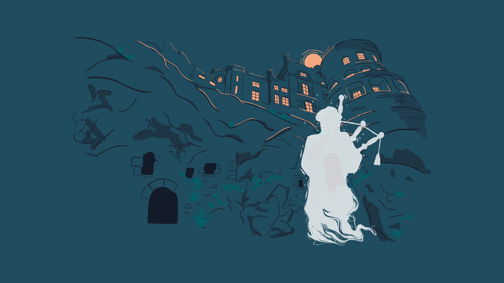
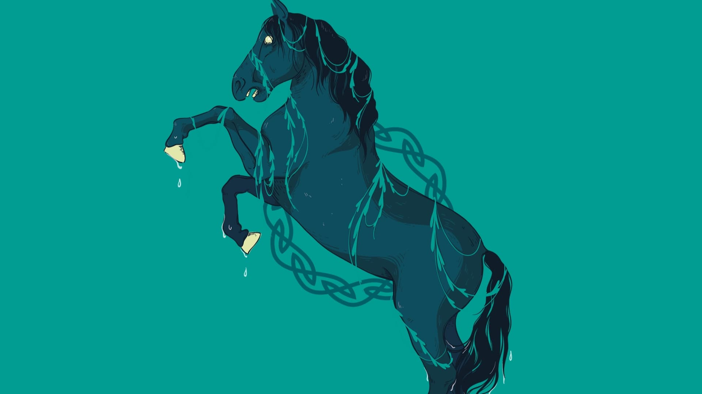
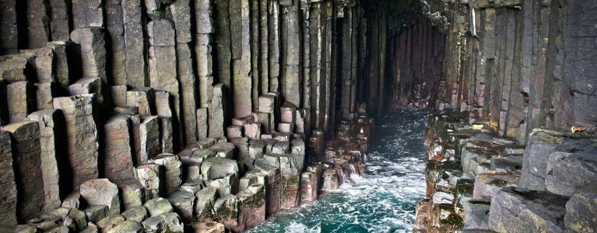

Les joueurs fantômes
Le son de la cornemuse est indissociable de l’Écosse, et il n’est pas rare d’entendre l’une ou l’autre histoire de joueur de cornemuse fantôme que l’on aurait entendu voire aperçu aux quatre coins du pays. On raconte qu’un réseau de tunnels reliait autrefois la crique de Grennan (Cove of Grennan) aux falaises surplombant la baie de Clanyard, près de Stranraer dans le Dumfries & Galloway. Les habitants du coin étaient convaincus que des fées vivaient dans ces tunnels, bien qu’aucun d’entre eux n’osait s’y aventurer pour en avoir le cœur net. Un jour, un joueur de cornemuse et son chien fidèle pénètrent dans le tunnel en jouant un air de cornemuse…On ne le revit ni ne l’entendit plus jamais. Bien que ces tunnels aient disparu, il paraîtrait que des airs de cornemuse se font parfois entendre au loin, sous terre…

Les kelpies
Les kelpies constituent l’un des mythes phares du folklore écossais. Il s’agit de grands animaux aquatiques capables de se métamorphoser. Selon la légende, ils hantent les fleuves et rivières d’Écosse, généralement sous l’apparence de chevaux. Bien qu’ils puissent avoir l’air de gentils géants, les kelpies sont traditionnellement considérés comme des créatures malveillantes qui s’attaquent à tout ce qui se met en travers de leur chemin. À l’instar des selkies, ces chevaux aquatiques peuvent également prendre une apparence humaine. On raconte que le bruit que fait la queue d’un kelpie lorsqu’elle entre dans l’eau est semblable à celui du tonnerre. Par conséquent, si en vous promenant vous passez à proximité d’un cours d’eau et entendez un grondement étrange, éloignez-vous de l’eau, on ne sait jamais...

Les géants de la grotte de Fingal
La grotte de Fingal se situe sur l’île de Staffa, au large de la côte ouest de l’Écosse. La parfaite symétrie de ces colonnes de basalte volcanique dont est constituée cette grotte marine longue de 69 mètres offre un spectacle extraordinaire. Mais au-delà de son apparence envoûtante, la grotte de Fingal renferme d’autres mythes… Elle fut façonnée il y a environ 60 millions d’années à la suite de coulées de lave successives, probablement les mêmes que celles qui donnèrent naissance à la « chaussée des géants » en Irlande du Nord. Ces deux formations sont composées des mêmes colonnes de basalte volcanique, c’est pourquoi la légende raconte qu’elles constituent les deux extrémités d’une gigantesque chaussée construite par le géant irlandais Fionn Mac Cumhaill. Selon cette même légende, Fionn aurait construit cette chaussée pour pouvoir aller affronter en duel Fingal, son rival écossais.
